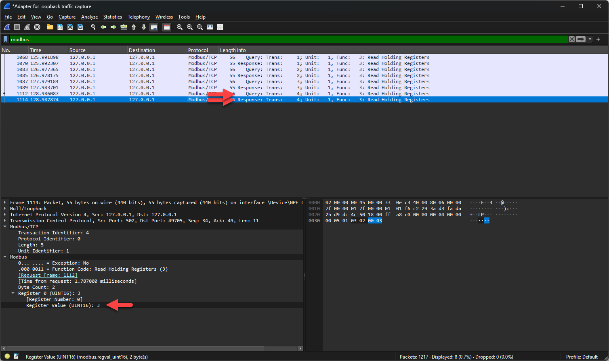

Modbus TCP is een industrieel communicatieprotocol dat veel gebruikt wordt in automatisering, tussen PLC's, sensoren en actuatoren. Het is het klassieke Modbus-protocol met TCP/IP als transportlaag eronder, waardoor het over een gewoon ethernetnetwerk loopt. Andere protocollen in diezelfde omgeving zijn Profinet, EtherCAT en Ethernet/IP.
De data van een Modbus-toestel staat in genummerde geheugenplaatsen die registers heten. Een holding register is er een die je zowel kan lezen als beschrijven, en dat is het soort dat je in dit labo gebruikt. Je spreekt zo'n register aan met zijn adres, en je schrijft er een getal in of je leest het getal eruit.
Een master die naar register 1 het getal 3 schrijft, stuurt dus een pakket met de functiecode voor schrijven, het adres 1 en de waarde 3. De slave voert dat uit en bevestigt.
Met twee programma's zet je allebei de kanten op je eigen computer op:
Een commando voor modpoll ziet er zo uit:
modpoll.exe -r 1 127.0.0.1 3
-r 1 is het adres van het holding register.127.0.0.1 is het adres van de slave. Dat adres heet localhost en wijst
naar je eigen computer.3 is de waarde die in dat register komt te staan. Laat je die weg, dan leest modpoll het
register uit in plaats van het te beschrijven.
Draaien master en slave op dezelfde machine, dan verlaat het verkeer je computer nooit en vang je het met een gewone netwerkadapter dus niet op. In Capture > Options kies je daarvoor Adapter for loopback traffic capture. Bij twee aparte toestellen kies je wel een gewone adapter.
Wireshark toont een registerwaarde naargelang het veld in decimale of in hexadecimale notatie. Zoek je
de waarde 20 en zie je 0x0014 staan, dan is dat hetzelfde getal.